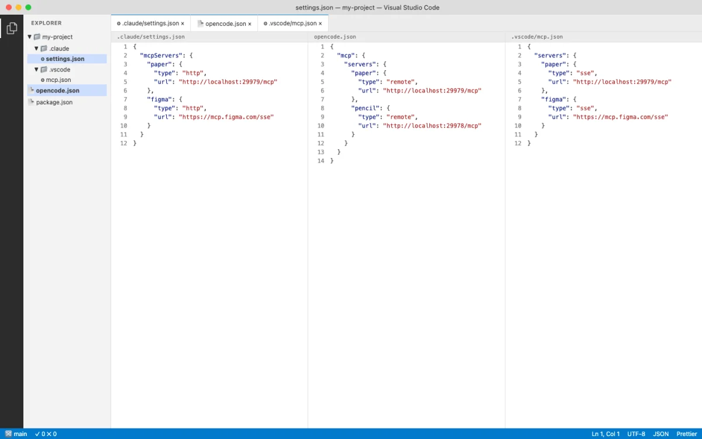
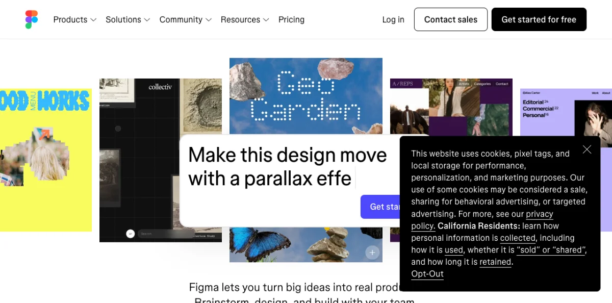
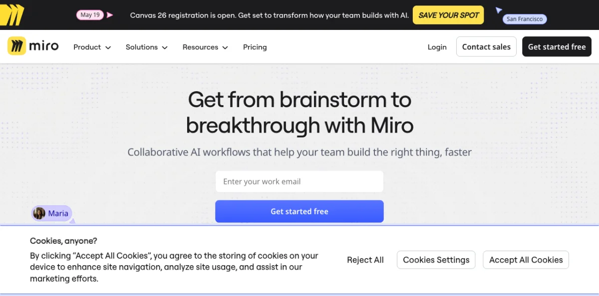
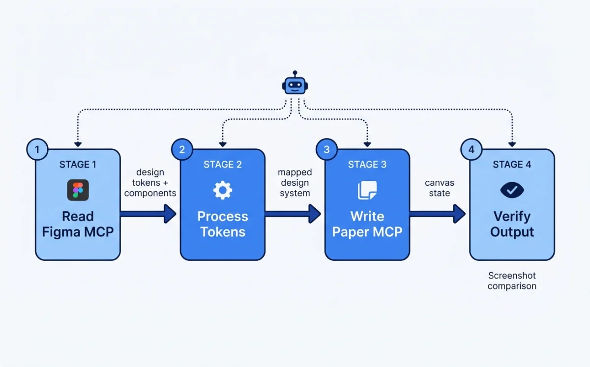

MCP: The Universal Design Tool Connector
MCP is a standardized protocol that lets AI agents talk to external tools. Think of it as an authenticated API that an LLM can call during a conversation. Instead of copying design specs between tools by hand, the agent reads from one MCP server and writes to another. All in a single session.
MCP servers expose three things: tools (functions the agent can call), resources (data the agent can read), and prompts (guided workflows). For design work, tools are what matter most. A tool like get_jsx on the Paper MCP server is the difference between manually translating a design and having the agent do it in seconds.
Two transport types exist. HTTP (remote) connects to a URL like https://mcp.figma.com/mcp. stdio (local) spawns a process on your machine. Figma uses HTTP. Paper uses HTTP too, but the server runs locally inside the Paper Desktop app at http://127.0.0.1:29979/mcp. The transport type matters for configuration, which I cover next.
As of May 2026, MCP is supported by every major agent platform: Claude Code, Codex CLI, Cursor, VS Code Copilot, OpenCode, Windsurf, Gemini CLI, Warp, Kiro, Factory, Firebender, Replit, Amazon Q, and Android Studio. The ecosystem is mature enough that MCP support is table stakes for any agent tool.
Configuring MCP Servers in Each Agent Platform
Every agent platform has its own MCP configuration syntax. Some use CLI commands. Others use JSON config files. A few support both. Here is the complete reference for the three agents this book focuses on, plus VS Code and Cursor for teams using those editors.

Claude Code
Claude Code supports two approaches: the mcp add CLI command and the plugin system. Plugins are preferred because they include skill files that teach the agent how to use the MCP tools effectively.
# Plugin approach (preferred for Figma)
$ claude plugin install figma@claude-plugins-official
# Plugin approach for Paper
$ claude plugin install paper-desktop@paper
# Manual remote server (Figma)
$ claude mcp add --scope user --transport http figma https://mcp.figma.com/mcp
# Manual local server (Paper via stdio bridge)
$ claude mcp add --transport stdio paper -- npx mcp-remote http://127.0.0.1:29979/mcp
# Verify: type /mcp in Claude Code
# You should see figma and paper listed
# Authenticate when promptedThe --scope user flag makes the MCP server available across all projects. Without it, the server is scoped to the current project only. For design tools you use daily, user-scoped is the right default.
Codex CLI
Codex uses a simpler configuration model. The mcp add command takes a name and URL. For tools that need plugins (like Figma), use the app settings UI.
# CLI: add Figma remote server
$ codex mcp add figma --url https://mcp.figma.com/mcp
# App: Settings > Plugins > + Figma > Install > Authenticate
# App: Settings > MCP Servers > Streamable HTTP
# Name: paper, URL: http://127.0.0.1:29979/mcpOpenCode
OpenCode configures MCP servers in opencode.json. The configuration is declarative JSON, which makes it versionable and shareable across a team.
// opencode.json
{
"mcp": {
"paper": {
"type": "remote",
"url": "http://127.0.0.1:29979/mcp",
"enabled": true
},
"figma": {
"type": "remote",
"url": "https://mcp.figma.com/mcp",
"enabled": true
}
}
}VS Code and Cursor
VS Code and Cursor both use JSON config for MCP servers, placed in .vscode/mcp.json at the project root. Cursor additionally supports a plugin deep-link format.
// .vscode/mcp.json
{
"servers": {
"figma": {
"url": "https://mcp.figma.com/mcp",
"type": "http"
},
"paper": {
"type": "http",
"url": "http://127.0.0.1:29979/mcp"
}
}
}For Cursor, the plugin approach is cleaner:
# Cursor plugins
/add-plugin figma
/add-plugin paper-desktop
# Cursor deep link for Figma (one-click setup)
cursor://anysphere.cursor-deeplink/mcp/install?name=Figma&config=...The following table summarizes the configuration approach for each agent platform.
| Platform | Config Method | Remote Servers | Local Servers | Plugin Support |
|---|---|---|---|---|
| Claude Code | CLI + opencode.json |
mcp add --transport http |
mcp add --transport stdio |
Yes (claude plugin) |
| Codex CLI | CLI + App Settings | mcp add --url |
App Settings only | Yes (Skills) |
| OpenCode | opencode.json |
"type": "remote" |
"type": "local" |
Yes (Skills) |
| VS Code | .vscode/mcp.json |
"type": "http" |
"type": "stdio" |
Yes (Extensions) |
| Cursor | .vscode/mcp.json + plugins |
"type": "http" |
"type": "stdio" |
Yes (/add-plugin) |
My take: Claude Code's plugin system is the most mature MCP configuration experience as of May 2026. The plugin includes both the server connection and the skill file that teaches the agent how to use the tools. With Codex and OpenCode, you get the connection but need to write your own skill context. This gap will close, but right now Claude Code has the edge for MCP-heavy workflows.
Figma MCP Server: Reading Designs Programmatically
Figma offers two MCP server types: Remote at https://mcp.figma.com/mcp (available to all plans) and Desktop (runs inside the Figma desktop app, available on Dev or Full seats for paid plans). The remote server is the one to use. It supports write-to-canvas, code-to-canvas, and diagram generation. The desktop server is limited to read operations for most users.

Authentication is OAuth-based. When you first connect, a browser window opens for the Figma sign-in flow. After that, the token is cached. No API keys to manage.
Figma's MCP server exposes 18 tools. Here is the complete reference.
| Tool | Remote | Desktop | Description |
|---|---|---|---|
get_design_context |
Yes | Yes | React+Tailwind code from selection (or custom framework) |
get_screenshot |
Yes | Yes | Screenshot of current selection |
get_variable_defs |
Yes | Yes | Variables and styles used in selection |
get_metadata |
Yes | Yes | Sparse XML of selection (IDs, names, types, positions, sizes) |
get_figjam |
Yes | Yes | FigJam diagrams as XML with screenshots |
get_code_connect_map |
Yes | Yes | Figma node to code component mappings |
use_figma |
Yes | No | General-purpose write to canvas (create, edit, delete) |
create_new_file |
Yes | No | Create new Figma Design or FigJam file |
generate_diagram |
Yes | No | Generate FigJam diagram from Mermaid or natural language |
generate_figma_design |
Yes | No | Send live UI to Figma as design layers (code to canvas) |
search_design_system |
Yes | No | Search libraries for components, variables, styles |
whoami |
Yes | No | Authenticated user identity |
The primary workflow is link-based. You select a layer in Figma, copy the URL from the browser address bar, and paste it into your agent prompt. The agent extracts the node ID and calls get_design_context. The tool returns React+Tailwind code by default, or you can specify a custom framework output.
Write-to-canvas capabilities are more ambitious. The agent can create, edit, and delete pages, frames, components, variants, variables, styles, text, and images. For FigJam, it can create stickies, sections, connectors, shapes, tables, and code blocks. The agent is supposed to check the design system before creating elements from scratch. In practice, this works best when paired with a skill file that enforces design system constraints.
Supported diagram types for generate_diagram: flowchart, Gantt chart, state diagram, sequence diagram, architecture diagram, and ERD. Useful for having an agent generate architecture documentation directly in FigJam.
Figma also provides built-in skills for the plugin system: Code Connect, Build/Update Screens from Design System, and Create New File. These skills teach the agent specific Figma workflows beyond raw tool access.
Client support varies by feature. The following table shows which agent platforms support which Figma MCP capabilities as of May 2026.
| Client | Desktop | Remote | Write to Canvas | Code to Canvas | Plugin/Skills |
|---|---|---|---|---|---|
| Claude Code | Yes | Yes | Yes | Yes | Yes (Figma plugin) |
| Codex | Yes | Yes | Yes | Yes | Yes (Codex Skills) |
| Cursor | Yes | Yes | Yes | Yes | Yes (Figma plugin) |
| VS Code Copilot | Yes | Yes | Yes | Yes | Yes (Figma plugin) |
| Gemini CLI | Yes | Yes | No | No | Yes (Extension) |
| Warp | Yes | Yes | Yes | Yes | No |
Miro MCP Server: AI-Powered Whiteboarding
Miro has been developing MCP integrations that give agents access to boards. The server enables reading board content, creating shapes and stickies, and making connections between elements. Typical use cases include automated diagram generation, turning meeting notes into structured boards, and architecture documentation.

The Miro MCP server follows standard MCP server configuration patterns. Configuration for each agent platform uses the same approaches covered in section 10.2. The key difference is that Miro boards are freeform canvases, not structured design files, so agent outputs tend to be more exploratory and less pixel-precise than Figma or Paper outputs.
As of May 2026, Miro's MCP documentation is limited compared to Figma and Paper. The tool list and configuration details may evolve. Check the official Miro developer docs for the current state.
MagicPattern MCP: Generative Design Patterns
MagicPattern provides generative design patterns --- gradients, mesh gradients, blobs, patterns, and other decorative elements. The MCP server lets agents generate SVG and CSS patterns programmatically rather than browsing a UI library by hand.

This is a niche tool in the MCP ecosystem, but it solves a real problem. Background patterns, decorative dividers, and visual texture are the kinds of tasks that slow down a design workflow. Having the agent generate these on demand, with parameters you control via prompt, is faster than any manual approach.
Configuration follows the standard MCP server pattern. The server exposes tools for generating specific pattern types with parameters like color, scale, density, and seed value. Each call returns SVG or CSS that the agent can write into a design file or codebase.
Paper MCP Server: 22 Tools for Connected Canvas
Paper's MCP server runs inside the Paper Desktop app. When a file is open, the server listens at http://127.0.0.1:29979/mcp. It connects to Cursor, Claude Code, Claude Desktop, Codex, Copilot, OpenCode, and Antigravity. The setup for each platform is covered in section 10.2.

Paper exposes 22 tools --- the largest surface of any design tool MCP server. Here is the complete reference.
| Tool | Category | Description |
|---|---|---|
get_basic_info |
Read | File name, page name, node count, artboard list with dimensions |
get_selection |
Read | Selected nodes (IDs, names, types, size, artboard) |
get_node_info |
Read | Node details by ID (size, visibility, lock, parent, children, text) |
get_children |
Read | Direct children of a node |
get_tree_summary |
Read | Compact text summary of subtree (optional depth limit) |
get_screenshot |
Read | Screenshot by ID (base64, optional 1x or 2x scale) |
get_jsx |
Export | JSX for node+descendants (Tailwind or inline-styles format) |
get_computed_styles |
Read | Computed CSS styles for nodes (batch) |
get_fill_image |
Read | Image data from image fill node (base64 JPEG) |
get_font_family_info |
Read | Font availability check (local or Google Fonts) |
get_guide |
Workflow | Guided workflows (e.g., figma-import) |
export |
Export | Export nodes as PNG, JPG, SVG, MP4 with scale overrides |
create_artboard |
Write | Create new artboard with name and styles |
write_html |
Write | Parse HTML and add/replace nodes |
set_text_content |
Write | Set text of Text nodes (batch) |
rename_nodes |
Write | Rename layers (batch) |
duplicate_nodes |
Write | Deep-clone nodes with descendant ID map |
move_nodes |
Write | Reposition or reparent nodes |
update_styles |
Write | Update CSS styles on nodes |
delete_nodes |
Write | Delete nodes and descendants |
finish_working_on_nodes |
Signal | Clear working indicator from artboards |
The get_jsx tool is Paper's killer feature for the design-to-code pipeline. It returns production-ready JSX with Tailwind classes directly from the canvas. No translation layer. No approximation. Paper is HTML/CSS natively, so the JSX output is a faithful representation of what is on screen. Chapter 12 covers this pipeline in depth.
The write_html tool enables the reverse direction: code to canvas. The agent generates HTML, calls write_html, and the content appears on the Paper canvas. This bi-directional flow is unique to Paper. Figma can write to canvas via use_figma, but the input format is a structured API call, not raw HTML.
My take: Paper's 22-tool MCP surface is the most complete in the ecosystem. The get_jsx tool alone saves hours of translating design to code. But the Desktop app requirement is a real limitation for Linux users and CI environments. If Paper offered a headless server mode, it would be the clear default for agentic design workflows.
Chaining MCP Servers: Multi-Tool Workflows
Multiple MCP servers can run simultaneously in a single agent session. The agent orchestrates between them using sequential tool calls. This is where MCP gets powerful --- a single agent prompt can trigger a workflow that spans Figma, Paper, Notion, and your codebase.
Three chaining patterns show up repeatedly in production use.
Pattern 1: Figma to Paper token sync. Open the design system file in Figma. Open the Paper file where you want the design system. Prompt the agent: "Create a design system in Paper that matches the Figma file." The agent calls get_variable_defs on the Figma MCP server to read colors, spacing, and typography. Then it calls create_artboard and write_html on the Paper MCP server to create the design system elements. Finally it calls update_styles to apply the tokens from Figma.
# Figma → Paper token sync workflow
# Both MCP servers active in same agent session
# Step 1: Agent reads Figma design system
# Figma MCP: get_variable_defs() → colors, spacing, typography
# Figma MCP: get_screenshot() → visual reference
# Step 2: Agent creates Paper design system
# Paper MCP: create_artboard({ name: "Design System" })
# Paper MCP: write_html({ html: "<div>...design system elements...</div>" })
# Paper MCP: update_styles({ styles: { /* tokens from Figma */ } })Pattern 2: Notion to Paper content sync. Open the Paper file with placeholder content. Prompt: "Sync the content from the Notion Testimonials database with this frame." The agent reads from the Notion MCP server, then writes the real content into Paper via set_text_content.
# Notion → Paper content sync workflow
# Step 1: Agent reads Notion database
# Notion MCP: query_database({ database_id: "testimonials" })
# Returns: [{ name: "Sarah", quote: "...", company: "..." }, ...]
# Step 2: Agent populates Paper design
# Paper MCP: set_text_content({ updates: [
# { nodeId: "name-1", text: "Sarah" },
# { nodeId: "quote-1", text: "..." },
# { nodeId: "company-1", text: "..." },
# ...
# ]})Pattern 3: Design to code and back. The agent reads a design from Figma or Paper via MCP, generates production code, then optionally writes the coded version back to the canvas for visual verification. This pattern is the foundation of the pipeline covered in Chapter 12.
# Design → Code → Canvas verification loop
# Step 1: Read design
# Figma MCP: get_design_context({ url: "https://figma.com/..." })
# Returns: React + Tailwind JSX
# Step 2: Agent generates production code
# (Agent writes files, runs dev server, verifies visually)
# Step 3: Write back to Paper for verification
# Paper MCP: write_html({ html: "<div class='hero'>...</div>" })
# Human reviews on Paper canvas
# Agent iterates based on feedbackEach MCP server uses the currently opened file as context. Figma MCP operates on whatever file you have open in the browser. Paper MCP operates on whatever file you have open in the Paper Desktop app. The agent does not switch files --- you do.
Warning: Long-running agent sessions can cause MCP connection drops. If the agent reports it cannot access a tool that should be available, restart the agent session. LLMs can also hallucinate tool parameters occasionally --- if you see repeated tool call errors, restart the session to reset the agent's tool-use context.
Web Access: Firecrawl and Exa MCP
Agents without live web access are frozen at their training cutoff. They cannot check current documentation, see what a competitor's site looks like today, or verify that a tool's API has not changed since last month. For design work, this limitation is more than inconvenient. It produces stale output. The agent references deprecated APIs, describes outdated UI patterns, and generates code that does not match the current state of the tools it uses.
Two MCP servers address this: Firecrawl for structured web extraction at scale, and Exa for quick ad-hoc web searches within a session.
Firecrawl: Structured Web Extraction
Firecrawl (128k+ GitHub stars) provides search, scrape, crawl, interact, and monitor capabilities via CLI and MCP server. In June 2026, it added installable workflows for repeatable web tasks, including deep research, SEO audits, and website design cloning (source: @firecrawl, retrieved 2026-06-04).
Install the CLI with all capabilities:
npx -y firecrawl-cli@latest init --all --browserOr add the MCP server to your agent configuration:
{
"mcpServers": {
"firecrawl": {
"command": "npx",
"args": ["-y", "firecrawl-mcp"]
}
}
}The five capabilities map to different design workflows:
| Capability | What it does | Design use case |
|---|---|---|
| Search | Web search with structured results | Find design references, competitors, and inspiration |
| Scrape | Extract content from a single URL | Capture a specific page's layout, copy, and styling |
| Crawl | Extract content from an entire site | Map a competitor's full site structure and page patterns |
| Interact | Scrape then interact with the page using AI or code | Navigate multi-step flows (onboarding, checkout) to capture all states |
| Monitor | Schedule recurring scrapes with change detection | Track when a competitor updates their design or a tool changes its docs |
The Interact capability is the most interesting for design workflows. It lets the agent scrape a page, then interact with it: click buttons, navigate flows, fill forms. This means the agent can capture multi-state UIs (empty states, loading states, error states, success states) by actually navigating through the product instead of just scraping a single page.
Exa MCP: Quick Web Search Inside Agent Sessions
Exa provides live web search directly inside agent sessions. Setup takes about 60 seconds: type /mcp in Claude Code, approve the Exa server, and the agent gains real-time web access (source: @RoundtableSpace, retrieved 2026-06-04).
Exa is for quick, ad-hoc lookups. It does not crawl or monitor. It searches and returns results. The value for design work is immediacy: the agent can verify current state without leaving the session.
{
"mcpServers": {
"exa": {
"command": "npx",
"args": ["-y", "exa-mcp-server"],
"env": {
"EXA_API_KEY": "your-api-key"
}
}
}
}When to Use Which
| Task | Use | Why |
|---|---|---|
| "What does the Stripe landing page look like right now?" | Exa | Quick single-page reference check |
| "Crawl this competitor's site and map their page types" | Firecrawl | Structured extraction at scale |
| "Check if the Figma REST API v2 endpoint has changed" | Exa | Quick documentation verification |
| "Capture all states of this competitor's checkout flow" | Firecrawl (Interact) | Multi-step navigation with interaction |
| "Alert me when this site changes its hero section" | Firecrawl (Monitor) | Scheduled change detection |
| "Find three examples of SaaS pricing pages with toggle toggles" | Exa | Search-based discovery |
Practical Workflows
Workflow 1: Competitive design audit.
You want to understand how five competitors handle their onboarding flows. The agent needs to see every screen, not just the landing page.
"Use Firecrawl to crawl these five URLs. For each site, extract:
1. The onboarding flow: every screen from sign-up to first-use
2. UI patterns used: modals, tooltips, progress bars, empty states
3. Copy tone: formal, casual, technical
4. Estimated number of steps in the flow
Summarize the patterns in a comparison table, then suggest which
patterns would work for our product."Firecrawl's crawl capability handles the scale. The agent gets structured data from every page on each site, identifies the onboarding screens, and produces a comparative analysis. Without Firecrawl, you would visit each site manually, screenshot every screen, and type notes into a document.
Workflow 2: Design cloning from a reference site.
You want to replicate the visual style of a specific site. Firecrawl's design cloning workflow extracts the styling directly.
"Scrape https://linear.app and extract:
1. Color palette (backgrounds, text, accents, borders)
2. Typography (font families, sizes, weights, line heights)
3. Spacing patterns (padding, gaps, margins)
4. Border radius values
5. Shadow values
6. Animation and transition patterns
Output as CSS custom properties I can use as a design token base."This is faster than manually inspecting elements in DevTools. The agent gets the full styling picture in one call and produces tokens you can drop into your design system.
Workflow 3: Multi-state UI capture.
You need to see all states of a competitor's pricing page: monthly vs annual toggle, different plan selections, upgrade modals, and the checkout flow that follows.
"Use Firecrawl Interact to navigate the pricing page at [URL].
1. Capture the default monthly view
2. Click the annual toggle and capture the updated prices
3. Click the Enterprise plan's 'Contact Sales' button and capture the modal
4. Click the Pro plan's 'Get Started' button and capture the checkout flow
5. For each state, extract the layout structure, copy, and visual hierarchy"The Interact capability navigates through the product like a real user. The agent captures states that a simple scrape would miss --- the toggle state, the modal state, the multi-step checkout state. This is the closest an agent gets to manual QA without a browser automation tool.
Workflow 4: Documentation verification before code generation.
Before the agent writes code that calls an external API, you want to verify the current endpoint structure.
"Search the web for the current Remotion v4.0 renderMedia() API.
I need to confirm:
1. The correct import path
2. Whether the 'codec' option is still required
3. The current way to specify output location
4. Any breaking changes from v3
Then use the confirmed API to write a render script for our
Hyperframes pipeline."Exa handles this in seconds. The agent checks the live documentation, confirms the current API shape, and writes code that matches the current version instead of guessing from training data. This prevents the common failure mode where the agent generates code for a deprecated API that no longer works.
Workflow 5: Competitor monitoring.
You want to know when a competitor updates their landing page design.
# Set up a recurring monitor
firecrawl monitor create \
--url "https://competitor.com" \
--schedule "daily" \
--prompt "Has the hero section, pricing section, or navigation changed since the last check? If yes, describe the changes. If no, respond 'no changes'." \
--notify "slack:#design-intel"The monitor runs daily. When the competitor updates their design, you get a Slack notification with a description of what changed. This is passive competitive intelligence --- you do not need to check manually, and you never miss a change.
Workflow 6: Design reference collection.
You are starting a new project and want to collect visual references for the design direction.
"Use Exa to find:
1. Five examples of developer tool landing pages with dark themes
2. Three examples of SaaS pricing pages with toggle between monthly/annual
3. Four examples of onboarding flows that use progressive disclosure
For each result, scrape the page with Firecrawl and extract:
- Screenshot URL
- Primary color palette
- Layout pattern (hero + features grid, hero + alternating sections, etc.)
- Notable design elements (animations, illustrations, 3D elements)
Organize into a reference board I can share with the team."Exa finds the sites. Firecrawl extracts the details. The agent produces a structured reference collection that replaces hours of manual browsing and screenshotting.
Security Considerations
Giving an agent live web access expands its capabilities and its attack surface. A few precautions:
- Scope Firecrawl to specific domains. Do not point a crawl at the open web. Target known competitors, reference sites, and documentation URLs. Unscoped crawling can consume credits fast and produce noise.
- Treat Exa results as unverified input. The agent trusts web search results. A convincingly-written blog post with wrong information becomes part of the agent's output. Cross-reference critical facts.
- Monitor queries in CI. If you use web access in automated workflows, log the queries. You want to know what the agent is searching for and what it finds.
- Rate-limit monitor jobs. Daily monitoring of 20 competitors is reasonable. Hourly monitoring is not. Set intervals that match the pace of actual change in your industry.
My take: Live web access should be a default, not an add-on. Every design agent should be able to check current state before generating output. The combination of Exa for quick lookups and Firecrawl for structured extraction covers the full range of web access needs in a design workflow. Install both. Use Exa daily for quick checks ("does this API still work?", "what does the current site look like?"). Use Firecrawl when you need structured data at scale (competitive audits, design cloning, multi-state capture). The five minutes of setup pays for itself the first time the agent catches a breaking API change before you ship broken code.
Troubleshooting MCP Connections
MCP connections fail in predictable ways. Here is a troubleshooting reference for the most common issues.
| Symptom | Cause | Fix |
|---|---|---|
| Agent says MCP tool is not available | Agent session started before MCP server was configured | Restart the agent session |
| Agent session cannot connect to Paper MCP | Paper Desktop app is not running or no file is open | Open Paper Desktop and ensure a file is loaded |
| Paper MCP connected but agent reports no access | MCP host tool needs restart | Restart the MCP host (Paper Desktop app) |
| Figma MCP returns errors on large designs | Large, deeply nested designs exceed response limits | Select specific frames instead of entire pages |
| Figma SVG fills returned as images | Known Figma MCP behavior | Use get_design_context for code output instead |
| Paper MCP fails on Windows WSL | WSL cannot access 127.0.0.1:29979 |
Enable mirrored mode networking in WSL config |
| MCP limits not reset after Paper plan upgrade | Desktop app caches plan limits | Update Paper Desktop app and restart |
| Repeated tool call errors from agent | LLM hallucinating tool parameters | Restart the agent session |
I spent an hour debugging an MCP connection before I realized the Paper Desktop app was not running. The error message was generic --- "connection refused" --- which pointed me toward network issues instead of the obvious cause. Start with the basics: is the tool running, is a file open, is the server listening?
Figma MCP has additional quirks. It ignores spacer elements. It does not convert inset borders to outlines. Code Connect components are not reliably converted. These are known limitations as of May 2026 and will likely improve over time. For now, work around them by selecting specific frames and validating the output.
My take: MCP connection issues are the number one source of frustration when starting with agentic design. The tools work well when they work, but the failure modes are silent and confusing. I recommend keeping a terminal tab open with a test MCP call ready to paste. When the agent reports a connection issue, verify independently before spending time on agent-side debugging.
Next: With MCP servers configured and connected, the next question is scale. How do multiple agents collaborate on a single design? Chapter 11 covers multi-agent design teams, the orchestrator pattern, and when parallelizing is worth the complexity overhead.